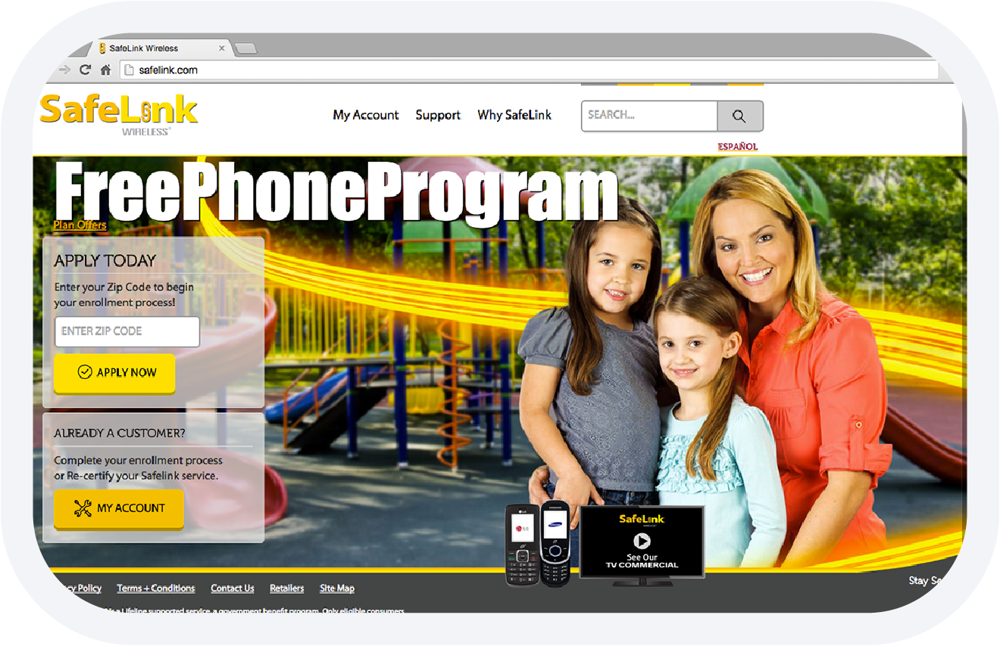
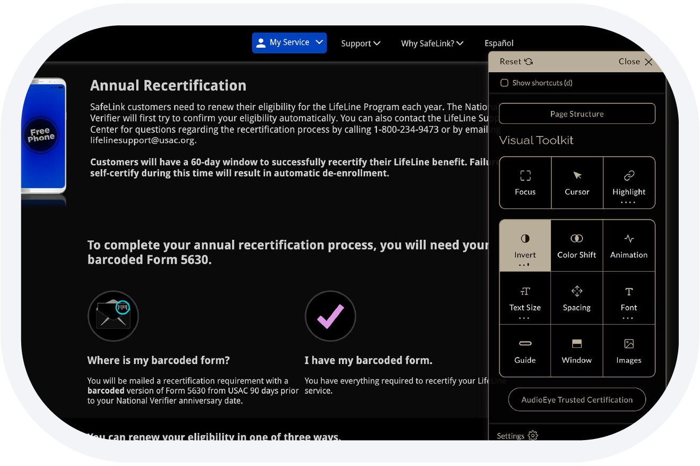
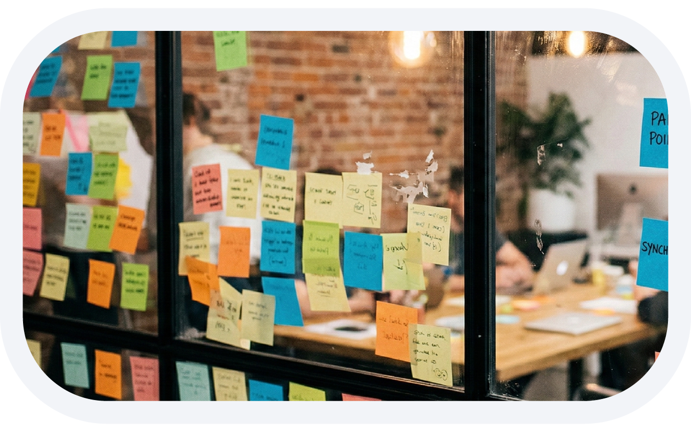
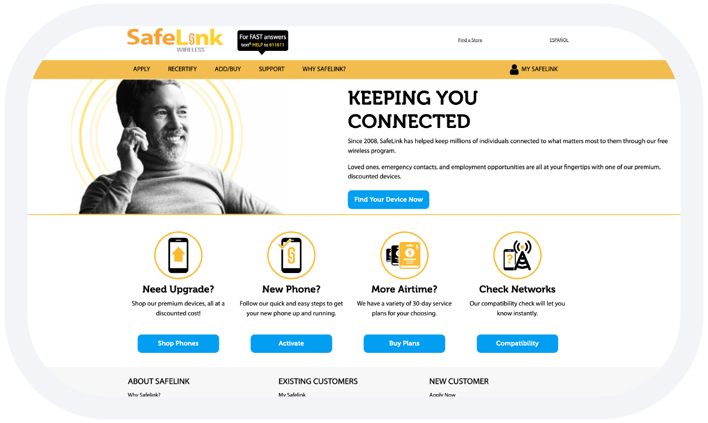

Safelink
Transforming accessibility and engagement for equal opportunity. Website and app redesign for the free phone social program.
The Lifeline free phone program is a government assistance program in the United States that provides eligible low-income, disabled individuals, and veterans with a free or discounted cell phone and monthly service to ensure they have access to essential communication services.

Reframing the signup experience
After joining the Safelink redesign team, my first proposal was to start the signup process by asking for the user’s ZIP code on the home page. Eligibility for the Lifeline program depends heavily on geographic rules, so capturing location early allowed the system to determine requirements before the user invested time filling out the full application.
While this introduced a small upfront step, it significantly reduced friction later in the process by tailoring the flow to the applicant’s region. The “Free Phone Program” messaging and human imagery were designed to create a welcoming tone for users who were often unfamiliar with online services. Combined with fewer steps and the removal of unnecessary form fields, the new flow made the application process clearer and easier to complete.
Designing for real users
Accessibility was a central design constraint. Many applicants had limited experience navigating digital interfaces, and a significant portion of the audience included visually impaired users or people accessing the site on low-end devices.
The redesign followed WCAG guidelines to ensure the platform could be navigated reliably by a wide range of users. High contrast color schemes, adjustable typography, and full keyboard navigation were introduced to improve readability and interaction. After researching available solutions, I also proposed implementing a third-party accessibility testing tool and worked directly on its integration to support ongoing compliance and usability improvements.


Fixing the biggest drop-off
Data showed that a large percentage of applicants dropped out during the identity verification step. This stage relied on multiple state APIs requiring users to photograph and upload documents, which was slow and unreliable for users with limited connectivity or poor camera quality.
Instead of leaving this step near the end of the process, I proposed moving it earlier in the flow. This allowed uploads and verification to process in the background while users continued entering their personal information, shipping address, and phone details. The change introduced more complexity in the flow logic, but reduced perceived waiting time and drop-off. After launch, the redesigned signup experience increased conversion by 38% compared to the previous website.
Beyond the signup
After attending Andy Polaine's workshop Designing Multichannel Services for Lives Beyond the Screen at UX Week 2014, I applied those principles to redesign the Safelink service portal.
Managing phone plans and features was simplified through a clearer interface that surfaced the most common actions directly within the account dashboard. Users could adjust plans, add services, or modify features with transparent pricing and clear explanations. The goal was to reduce reliance on customer support while giving users more control over their Safelink services.

On to the streets
After launching the redesigned website, the team turned its attention to the Street Teams mobile app used by field agents enrolling applicants directly in communities.
These agents often worked in areas with poor connectivity while assisting users unfamiliar with digital forms. The mobile redesign focused on simplifying enrollment flows and supporting faster data entry in real-world conditions. Together, the redesigned web and mobile experiences created a more accessible and efficient onboarding process, helping more eligible users successfully enroll in the Lifeline program.
The Safelink redesign showed how accessible, human-centered design can remove barriers between people and services that meaningfully improve their lives.